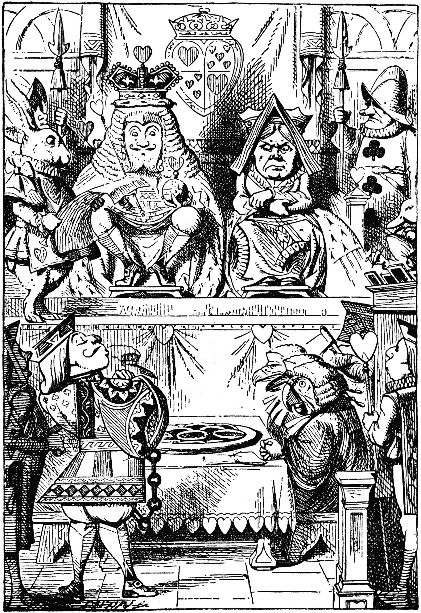
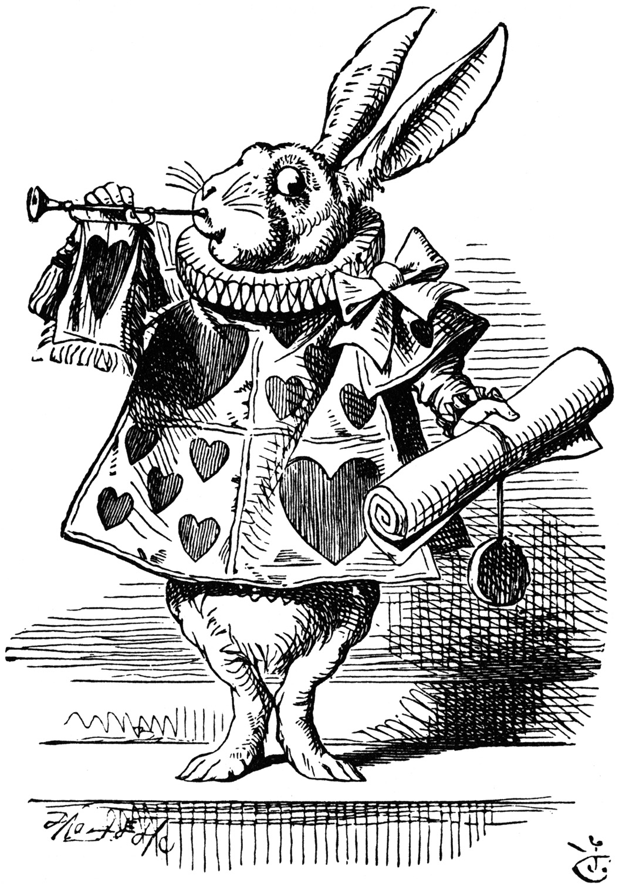
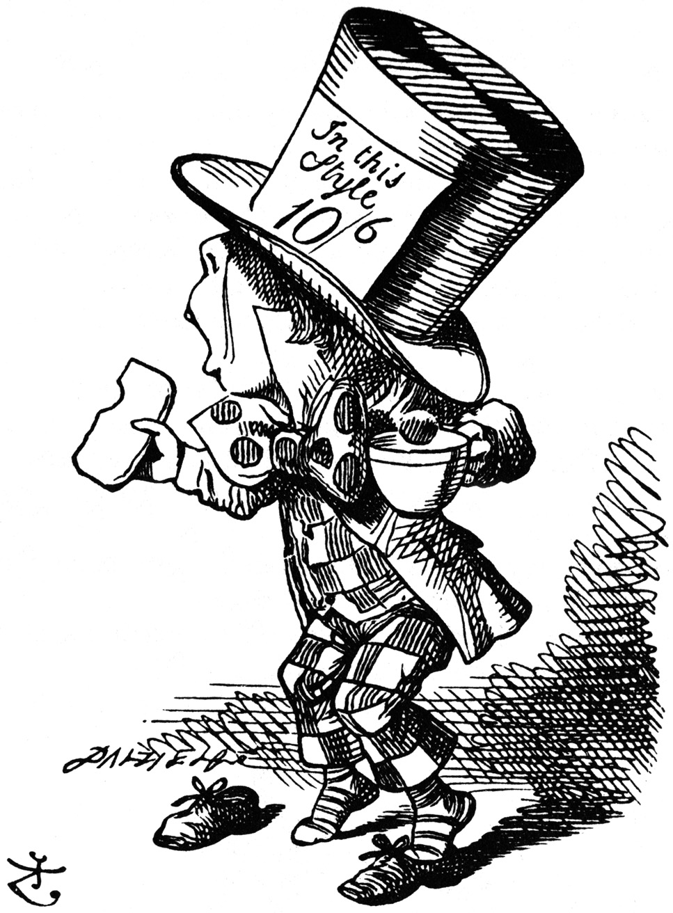
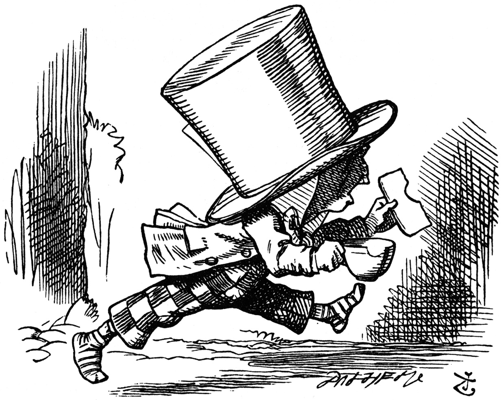

The King and Queen of Hearts were seated on their throne when
they arrived, with a great crowd assembled about them--all sorts
of little birds and beasts, as well as the whole pack of cards:
the Knave was standing before them, in chains, with a soldier on
each side to guard him; and near the King was the White Rabbit,
with a trumpet in one hand, and a scroll of parchment in the
other. In the very middle of the court was a table, with a large
dish of tarts upon it: they looked so good, that it made Alice
quite hungry to look at them--'I wish they'd get the trial done,'
she thought, 'and hand round the refreshments!' But there seemed
to be no chance of this, so she began looking at everything about
her, to pass away the time.
Alice had never been in a court of justice before, but she had
read about them in books, and she was quite pleased to find that
she knew the name of nearly everything there. 'That's the judge,'
she said to herself, 'because of his great wig.'
The judge, by the way, was the King; and as he wore his crown
over the wig, (look at the frontispiece if you want to see how he
did it,) he did not look at all comfortable, and it was certainly
not becoming.

King and Queen inspecting tart in courtroom
'And that's the jury-box,' thought Alice, 'and those twelve
creatures,' (she was obliged to say 'creatures,' you see, because
some of them were animals, and some were birds,) 'I suppose they
are the jurors.' She said this last word two or three times over
to herself, being rather proud of it: for she thought, and
rightly too, that very few little girls of her age knew the
meaning of it at all. However, 'jury-men' would have done just as
well.
The twelve jurors were all writing very busily on slates.
'What are they doing?' Alice whispered to the Gryphon. 'They
can't have anything to put down yet, before the trial's
begun.'
'They're putting down their names,' the Gryphon whispered in
reply, 'for fear they should forget them before the end of the
trial.'
'Stupid things!' Alice began in a loud, indignant voice, but
she stopped hastily, for the White Rabbit cried out, 'Silence in
the court!' and the King put on his spectacles and looked
anxiously round, to make out who was talking.
Alice could see, as well as if she were looking over their
shoulders, that all the jurors were writing down 'stupid things!'
on their slates, and she could even make out that one of them
didn't know how to spell 'stupid,' and that he had to ask his
neighbour to tell him. 'A nice muddle their slates'll be in
before the trial's over!' thought Alice.
One of the jurors had a pencil that squeaked. This of course,
Alice could not stand, and she went round the court and
got behind him, and very soon found an opportunity of taking it
away. She did it so quickly that the poor little juror (it was
Bill, the Lizard) could not make out at all what had become of
it; so, after hunting all about for it, he was obliged to write
with one finger for the rest of the day; and this was of very
little use, as it left no mark on the slate.
'Herald, read the accusation!' said the King.
On this the White Rabbit blew three blasts on the trumpet, and
then unrolled the parchment scroll, and read as follows:--
'The Queen of Hearts, she made some tarts, All on a summer
day: The Knave of Hearts, he stole those tarts, And took them
quite away!'

White Rabbit, dressed as herald, blowing trumpet
'Consider your verdict,' the King said to the jury.
'Not yet, not yet!' the Rabbit hastily interrupted. 'There's a
great deal to come before that!'
'Call the first witness,' said the King; and the White Rabbit
blew three blasts on the trumpet, and called out, 'First
witness!'
The first witness was the Hatter. He came in with a teacup in
one hand and a piece of bread-and-butter in the other. 'I beg
pardon, your Majesty,' he began, 'for bringing these in: but I
hadn't quite finished my tea when I was sent for.'

Mad Hatter arrives hastily in court to testify
'You ought to have finished,' said the King. 'When did you
begin?'
The Hatter looked at the March Hare, who had followed him into
the court, arm-in-arm with the Dormouse. 'Fourteenth of March, I
think it was,' he said.
'Fifteenth,' said the March Hare.
'Sixteenth,' added the Dormouse.
'Write that down,' the King said to the jury, and the jury
eagerly wrote down all three dates on their slates, and then
added them up, and reduced the answer to shillings and pence.
'Take off your hat,' the King said to the Hatter.
'It isn't mine,' said the Hatter.
'Stolen!' the King exclaimed, turning to the jury, who
instantly made a memorandum of the fact.
'I keep them to sell,' the Hatter added as an explanation;
'I've none of my own. I'm a hatter.'
Here the Queen put on her spectacles, and began staring at the
Hatter, who turned pale and fidgeted.
'Give your evidence,' said the King; 'and don't be nervous, or
I'll have you executed on the spot.'
This did not seem to encourage the witness at all: he kept
shifting from one foot to the other, looking uneasily at the
Queen, and in his confusion he bit a large piece out of his
teacup instead of the bread-and-butter.
Just at this moment Alice felt a very curious sensation, which
puzzled her a good deal until she made out what it was: she was
beginning to grow larger again, and she thought at first she
would get up and leave the court; but on second thoughts she
decided to remain where she was as long as there was room for
her.
'I wish you wouldn't squeeze so.' said the Dormouse, who was
sitting next to her. 'I can hardly breathe.'
'I can't help it,' said Alice very meekly: 'I'm growing.'
'You've no right to grow here,' said the Dormouse.
'Don't talk nonsense,' said Alice more boldly: 'you know
you're growing too.'
'Yes, but I grow at a reasonable pace,' said the
Dormouse: 'not in that ridiculous fashion.' And he got up very
sulkily and crossed over to the other side of the court.
All this time the Queen had never left off staring at the
Hatter, and, just as the Dormouse crossed the court, she said to
one of the officers of the court, 'Bring me the list of the
singers in the last concert!' on which the wretched Hatter
trembled so, that he shook both his shoes off.
'Give your evidence,' the King repeated angrily, 'or I'll have
you executed, whether you're nervous or not.'
'I'm a poor man, your Majesty,' the Hatter began, in a
trembling voice, '--and I hadn't begun my tea--not above a week
or so--and what with the bread-and-butter getting so thin--and
the twinkling of the tea--'
'The twinkling of the what?' said the King.
'It began with the tea,' the Hatter replied.
'Of course twinkling begins with a T!' said the King
sharply. 'Do you take me for a dunce? Go on!'
'I'm a poor man,' the Hatter went on, 'and most things
twinkled after that--only the March Hare said--'
'I didn't!' the March Hare interrupted in a great hurry.
'You did!' said the Hatter.
'I deny it!' said the March Hare.
'He denies it,' said the King: 'leave out that part.'
'Well, at any rate, the Dormouse said--' the Hatter went on,
looking anxiously round to see if he would deny it too: but the
Dormouse denied nothing, being fast asleep.
'After that,' continued the Hatter, 'I cut some more bread-
and-butter--'
'But what did the Dormouse say?' one of the jury asked.
'That I can't remember,' said the Hatter.
'You must remember,' remarked the King, 'or I'll have
you executed.'
The miserable Hatter dropped his teacup and bread-and-butter,
and went down on one knee. 'I'm a poor man, your Majesty,' he
began.
'You're a very poor speaker,' said the King.
Here one of the guinea-pigs cheered, and was immediately
suppressed by the officers of the court. (As that is rather a
hard word, I will just explain to you how it was done. They had a
large canvas bag, which tied up at the mouth with strings: into
this they slipped the guinea-pig, head first, and then sat upon
it.)
'I'm glad I've seen that done,' thought Alice. 'I've so often
read in the newspapers, at the end of trials, "There was some
attempts at applause, which was immediately suppressed by the
officers of the court," and I never understood what it meant till
now.'
'If that's all you know about it, you may stand down,'
continued the King.
'I can't go no lower,' said the Hatter: 'I'm on the floor, as
it is.'
'Then you may sit down,' the King replied.
Here the other guinea-pig cheered, and was suppressed.
'Come, that finished the guinea-pigs!' thought Alice. 'Now we
shall get on better.'
'I'd rather finish my tea,' said the Hatter, with an anxious
look at the Queen, who was reading the list of singers.
'You may go,' said the King, and the Hatter hurriedly left the
court, without even waiting to put his shoes on.

...and just as hastily leaves
'--and just take his head off outside,' the Queen added to one
of the officers: but the Hatter was out of sight before the
officer could get to the door.
'Call the next witness!' said the King.
The next witness was the Duchess's cook. She carried the
pepper-box in her hand, and Alice guessed who it was, even before
she got into the court, by the way the people near the door began
sneezing all at once.
'Give your evidence,' said the King.
'Shan't,' said the cook.
The King looked anxiously at the White Rabbit, who said in a
low voice, 'Your Majesty must cross-examine this witness.'
'Well, if I must, I must,' the King said, with a melancholy
air, and, after folding his arms and frowning at the cook till
his eyes were nearly out of sight, he said in a deep voice, 'What
are tarts made of?'
'Pepper, mostly,' said the cook.
'Treacle,' said a sleepy voice behind her.
'Collar that Dormouse,' the Queen shrieked out. 'Behead that
Dormouse! Turn that Dormouse out of court! Suppress him! Pinch
him! Off with his whiskers!'
For some minutes the whole court was in confusion, getting the
Dormouse turned out, and, by the time they had settled down
again, the cook had disappeared.
'Never mind!' said the King, with an air of great relief.
'Call the next witness.' And he added in an undertone to the
Queen, 'Really, my dear, you must cross-examine the next
witness. It quite makes my forehead ache!'
Alice watched the White Rabbit as he fumbled over the list,
feeling very curious to see what the next witness would be like,
'--for they haven't got much evidence yet,' she said to
herself. Imagine her surprise, when the White Rabbit read out, at
the top of his shrill little voice, the name 'Alice!'
Project Gutenberg Release 2.7a of Alice in Wonderland
These electronic texts of the classics are released in the CopyLeft traditions of the Free Software Foundation and Richard M. Stallman. This means the document is to be considered under copyright, and an individual may make as may copies for self and/or friends, etc. and will be under no obligation as long as this is not commercial. Not for profit corporations and all other corporate entities are not to distribute this file for any more cost to the user than $2 and only if a disk is provided for that fee, including all shipping-handling and/or other fees associated with that disk. If this file is to be included with any other hardware, software or other material no fee may be charged for this file. If anyone finds an error, and we are sure you will, please email location of the errors to hart@uiucvmd, (BITNET) or hart@vmd.cso.uiuc.edu (INTERNET), or to Duncan Research via U.S. Mail at the address below.